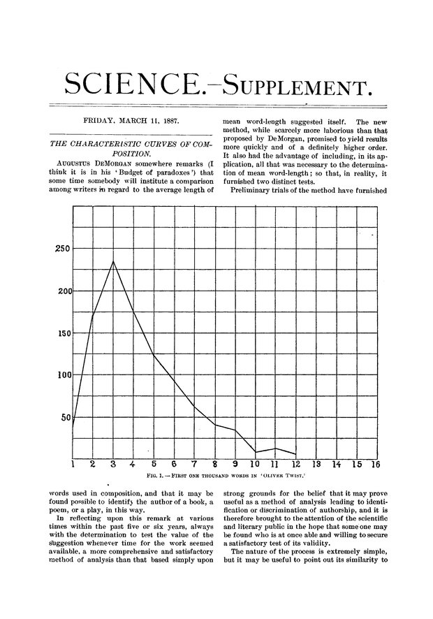
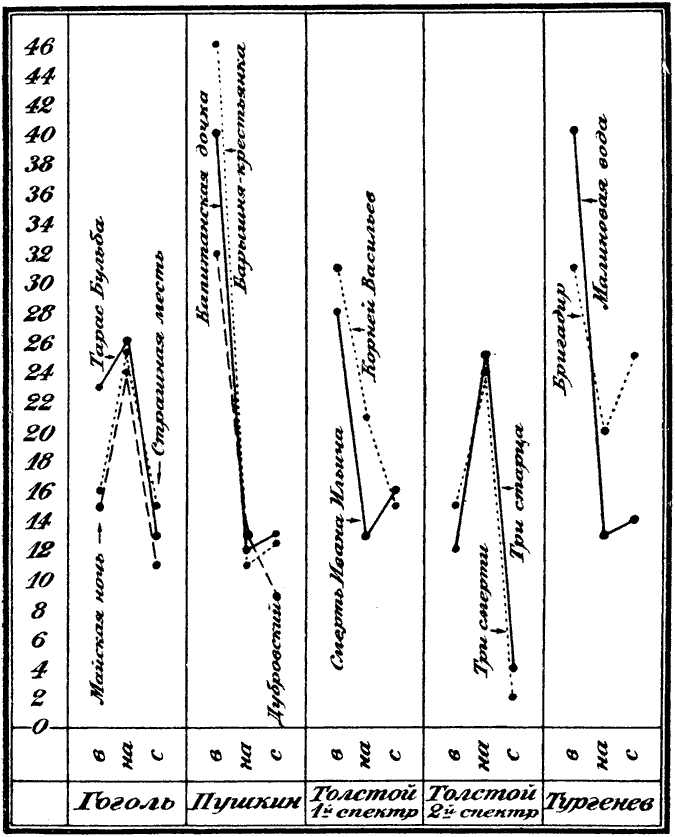
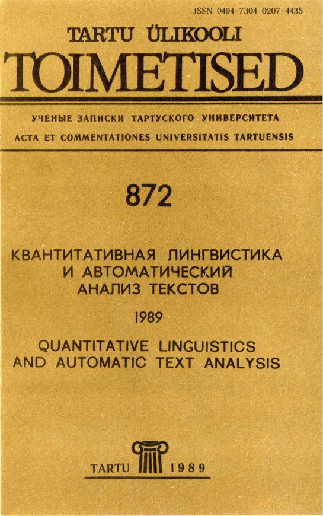

Digital Humanities Crash-Course
April 19 — 26
Course slides & materials
danilsko.github.io/DHelsinki
Самая Главная Ссылка
Plan for today
- About me
- (and about you!)
- About Digital Humanities, and whether you should care
- Some history of humanities computing
- Contemporary DH
- What will we learn
About me
- Full name: Daniil Skorinkin
- Just call me Danya (DAAnyuh, IPA:'dɑːnjə) or Dan
- Work at HSE: hse.ru/staff/skorinkin
- Computational linguist/NLP specialist by origin
- 'Digital Humanist' by current trade
...Your turn, please, I am all 👂
About Digital Humanities
or …What is Digital Humanities?
..is almost a topic of research in itself
whatisdigitalhumanities.com will give you 817 definitions
My favourite definition
Taking tools built by warmongers, spy agencies & investment bankers and using them to study literature, philosophy, culture and the classics
(Elijah Meeks, Stanford Digital Scholarship)
Or to be more precise
Applying computational methods and sophisticated IT to research in the humanities
some history
Two major stories
- Scholars trying to formalize & calculate stuff in the humanities
- Scholars applying computers to these formalisations and calculations
XIX century
-

- 1851 — A. De Morgan suggests mean word-length as an authorship feature
- 1887 — T. Mendenhall, 'The Characteristic Curves of Composition' (picture)
- 1890 — W. Lutosławski, 'Principes de stylométrie', establishing the chronology of Plato's Dialogues
early XX century
-

- Calculations in Poetry (e.g. Andrei Beliy, 1910)
- 1915 — N. Morozov, 'Linguistic Spectres' (picture)
- 1915-1930 (roughly) — 'Formal Method' in literary studies (Russian Formalism)
Formalism
- ???
- ???
- ???

Boris Yarkho
- ???
- ???
- ???

Structuralism
- ???
- ???
- ???
Moscow-Tartu Semiotic School (MTSS)
- ???
- ???
- ???
Case of MTSS influence: Sapogov
- 1974 - V. Sapogov
- Quantitative analysis of Ostrovsky's 'The Forest'
- ???
Literary Computing — also in Tartu
-

- Гринбаум О. Н. Структуризация худ. прозы с использованием ЭВМ. 2 : Детализация структурированного текста / О. Н. Гринбаум // Квантитативная лингвистика и автоматический анализ текстов. Тарту, 1989.
Humanities Computing (like, with computers)
1949 — 1970
- ???
- ???
- ???
Digital Humanities Today
Digital Archeology
- ???
- ???
- ???